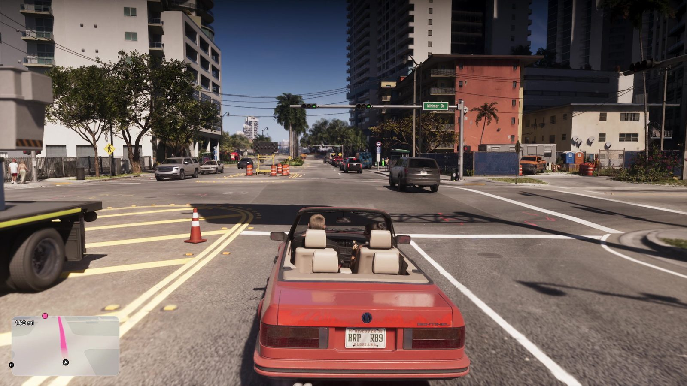
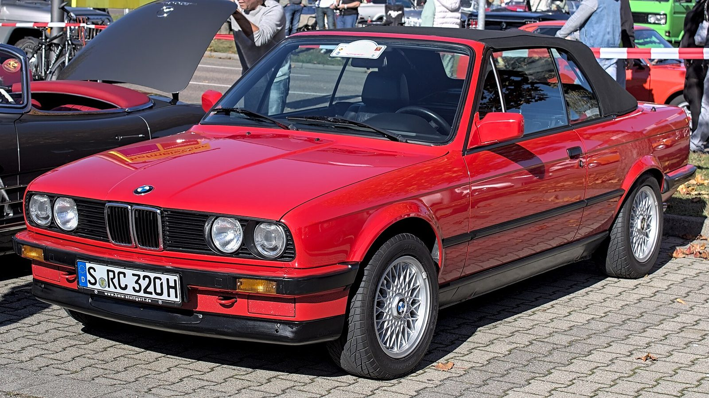
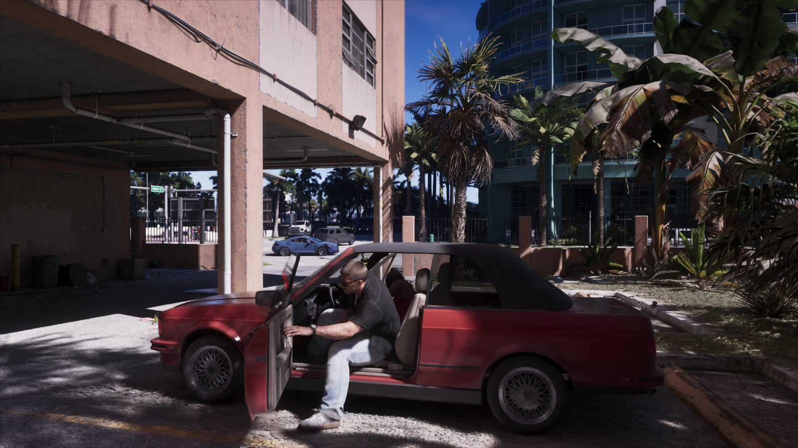

Красный кабриолет Джейсона и BMW 3 серии E30
Опубликовано:
Угловатый кузов, мягкая крыша и узкие задние фонари выдают BMW 3 серии E30. Но в игре у машины своя марка и своё название — Rockstar реальные бренды не использует.


- В «Расширенном показе» Джейсон садится в красный кабриолет на парковке под домом и едет по Вайс-Сити.
- Силуэт, капот, фонари и мягкая крыша узнаются как BMW 3 серии второго поколения (E30).
- E30 выпускали с 1982 по 1994 год, заводской кабриолет — с 1985 по 1993-й.
- Название модели в игре Rockstar пока не объявила.
Что в игре
Джейсон спускается на парковку под жилым домом, открывает красный кабриолет с поднятой тканевой крышей и выезжает в город. Дальше крыша уже сложена: видны светлые сиденья, узкие прямоугольные задние фонари и номера. Машина немолодая — как и многое в жизни Джейсона.

Что в реальности
BMW 3 серии E30 — второе поколение «трёшки». Выпускалась с 1982 по 1994 год как седан, купе, универсал и кабриолет. Заводской кабриолет BMW показала в 1985 году, производили его до 1993-го. В США E30 стал символом 80-х — машиной молодых городских профессионалов, «яппи». Сегодня ухоженный кабриолет E30 — желанная классика.
До заводского кабриолета «открытые» E30 делало кузовное ателье Baur. У их версии TopCabriolet над салоном оставалась жёсткая дуга-рамка, а снималась только часть крыши. У машины Джейсона дуги нет — значит, за образец взят полноценный заводской кабриолет. Это наша трактовка, Rockstar модель не называла.
Совпадает и отличается
| BMW E30 Cabrio | Кабриолет Джейсона | |
|---|---|---|
| Угловатый кузов 80-х | Да | 🟢 Да |
| Мягкая складная крыша | Да | 🟢 Да |
| Узкие задние фонари | Да | 🟢 Да |
| Марка и название | BMW | 🔵 Своё, ещё не объявлено |
Источники: Rockstar Games («Расширенный показ» GTA 6); BMW Group Classic — история 3 серии E30.
Реальные фото: Фото: Alexander Migl, CC BY-SA 4.0 · Wikimedia Commons. Кадры игры: Rockstar Games.
Разборы кадров, слухи и факты за 30 секунд. Подписывайтесь:
YouTubeInstagramTikTok